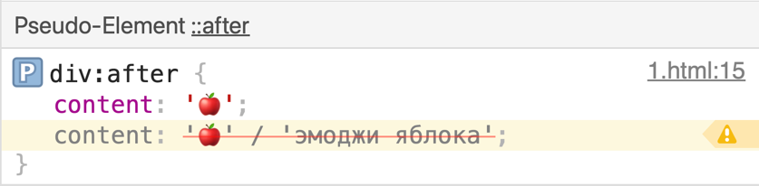

.
Alt-тексты для псевдоэлементов.
Общеизвестно, что псевдоэлементы не видны для скринридеров. Однако с недавнего времени это не совсем так.
Если посмотреть в черновик спецификации css-content,
то синтаксис значения
свойства content описан так:
normal | none
| [ <content-replacement> | <content-list> ]
[/ [ <string> | <counter> ]+ ]?Нас интересует часть, которую я выделила жирным. В спецификации ей посвящен отдельный раздел.
Этот синтаксис позволяет записать через слеш строку для отображения и затем строку, которую прочитает скринридер. Разберем на примере демо:
<div></div>
<style>
div:after {
content: '🍎'; /* фолбэк */
content: '🍎' / 'эмоджи яблока';
}
</style>На элементе div в дереве
доступности окажется текст после слеша, то есть эмоджи яблока.

Более полезным новый синтаксис будет, если вы кладете в пседоэлемент не текст, а, например, картинку:
<div></div>
<style>
div:after {
content: url('img/apple.png'); /* фолбэк */
content: url('img/apple.png') / 'красное яблоко';
}
</style>Будьте внимательны и пишите фолбэк, потому что браузеры, не поддерживающие новый синтаксис, рассматривают в таком случае все значение свойства как невалидное.
Ответ на справедливый вопрос "а какая поддержка?" выглядит вот так:

Пока что только Chrome.
Поэтому будьте внимательны и по возможности пишите альтернативный текст для ваших псевдоэлементов.